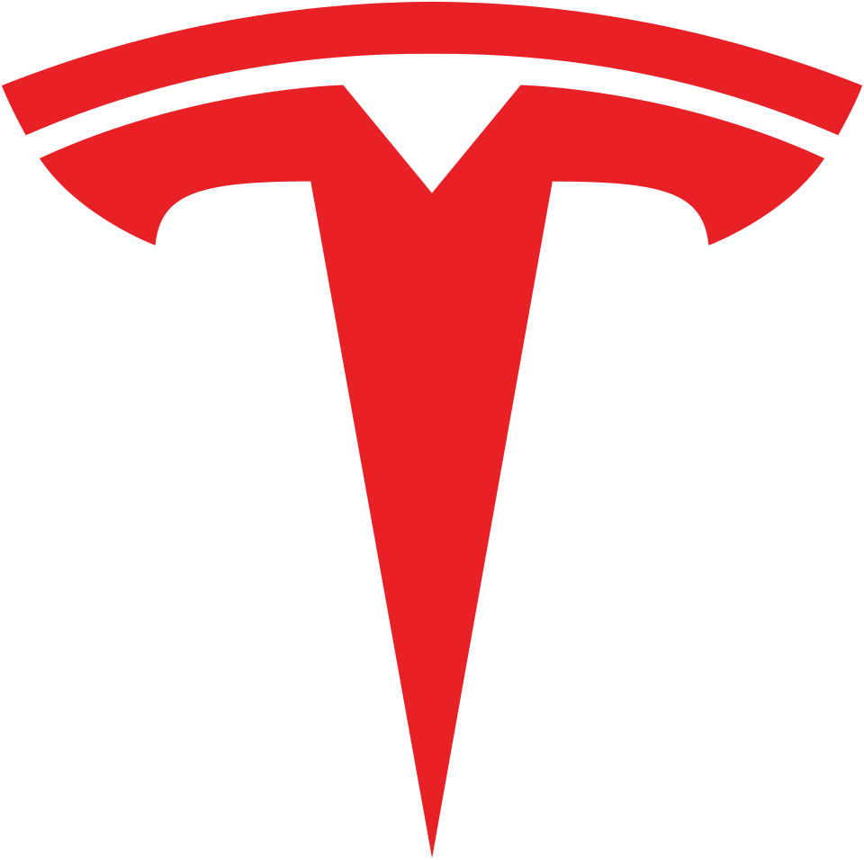

Tesla
Manufacturing Technical Program Manager · Optimus
Overview
As a technical program manager I owned the day-to-day manufacturing program for the Optimus hand line, coordinating material readiness, assembly processes, tooling, test equipment, production support, and cross-functional issue resolution to help ensure weekly build targets were met.
Selected Impact
34 + 9
Fixtures & Testers Delivered
120+
Manufacturing Interfaces Defined
200+
Build Issues Managed
01 Manufacturing Line Ownership
Driving the people, material, processes, and tooling required to meet weekly builds.
The Challenge
The Optimus hand was evolving rapidly while weekly build targets still needed to be met. Keeping the line running required coordinating material readiness, assembly processes, tooling, production support, and engineering resources as new issues emerged.
My Role
I owned day-to-day manufacturing execution for the hand line, tracking incoming material against build requirements, coordinating process and tooling readiness, developing assembly work instructions, and working across production, process, and design teams to remove blockers that threatened upcoming builds.
As issues were identified on the production line, I triaged them based on type and priority, routed them to the appropriate engineering owners, and supported resolution through closure. For issues within my scope, such as fixture or assembly problems, I worked directly on implementing solutions.
Material
Readiness
Process
Readiness
Tooling
Readiness
Production
Support
Issue
Closure
Weekly Build
Targets
Build Issue Management
Production issues ranged from assembly and fit problems to part failures, tooling needs, and upstream engineering blockers. I managed more than 200 build issues, ensuring problems were visible, assigned, prioritized, and driven toward closure.
- Report Issue raised from the production line.
- Triage Classified by type, severity, and potential build impact.
- Assign Routed to the appropriate engineering owner.
- Resolve Supported technical closure and escalated blockers as needed.
- Close Verified the issue was resolved and removed from active build risk.
Jira & Reporting
I developed Jira dashboards and workflows to organize production issues, surface high-priority blockers, track issue categories, and notify responsible teams when relevant problems were reported. These tools also supported weekly build-status and risk reporting to leadership.
02 Tooling & Test Equipment
Developing and delivering the equipment required to assemble and validate a new robot generation.
34 Fixtures
The Challenge
A new robot generation required a new set of assembly fixtures to support the manufacturing process, with tooling needing to be defined, developed, and available in time for upcoming builds.
My Role
I worked with the manufacturing team to identify where fixtures were needed and define how each would support the assembly process. I coordinated fixture development and tracked incoming tooling, working with vendors to maintain delivery schedules and ensure each fixture met the needs of the new design.
As fixtures arrived, I also supported assembly and preparation of the tooling for production use.
Outcome
Delivered 34 assembly fixtures to support production of the new robot generation.
9 In-Line Testers
The Challenge
New in-line test equipment had to be developed alongside the evolving manufacturing process and delivered in time to support production.
My Role
I owned the program execution across the tester development lifecycle, coordinating test engineering and equipment vendors to keep each machine aligned with technical requirements and the overall production schedule.
I tracked progress through DFM, machine assembly, equipment testing, factory/site readiness, delivery, and in-house validation, driving schedule risks and technical blockers to closure along the way.
Outcome
Delivered 9 in-line testers, coordinating development from DFM through on-site validation and production readiness.
- DFM Reviewed equipment concepts with Test Engineering and vendors to align the machine with manufacturing and test requirements.
- Build Tracked machine assembly progress, schedule, and open technical items with the equipment vendor.
- Test Coordinated equipment testing to verify functionality and identify issues before shipment.
- Site Readiness Ensured the factory was prepared to receive and integrate the incoming equipment.
- Delivery Coordinated equipment arrival against the overall production and installation schedule.
- Validation Supported in-house testing and validation to confirm the equipment was ready for production use.
03 Manufacturing Interfaces & Automation
Defining how automation equipment could safely and repeatably interact with the product.
The Challenge
Developing automated assembly equipment required clearly defining where and how robots, fixtures, and tooling could interact with the product. These interfaces had to account for assembly requirements while protecting functional and cosmetic surfaces.
My Role
I worked between product design and automation engineering to define more than 120 manufacturing interfaces for the new robot generation. These interfaces established where robots, fixtures, and tooling could safely interact with the product, including allowable contact locations, fixture locating and support surfaces, and areas requiring protection from manufacturing contact.
I worked with both teams to align these requirements with the assembly process while accounting for functional and cosmetic constraints, providing clear product-to-equipment requirements for downstream automation development.
Outcome
Defined more than 120 manufacturing interfaces, providing the product-to-equipment requirements needed to support automation equipment development.
04 Key Takeaways
Design for the Manufacturing Interface
I learned how important it is to define how a product will physically interact with the equipment that builds it. Decisions around robot access, fixture contact, locating features, and protected surfaces need to be considered alongside product design, especially when preparing for future automation.
Build the Process Before the Automation
Working on an early-build manual assembly line taught me how valuable those builds are for developing the manufacturing process. Building manually exposes assembly challenges, tooling needs, process sequence, and product-design issues that can inform a more robust automated process.
Make Problems Visible
Managing a fast-moving build taught me that resolving problems starts with making them visible. Clear ownership, prioritization, escalation paths, and status tracking were critical to keeping hundreds of build issues moving toward closure.
Building Jira dashboards and workflows showed me how the right project-management systems can reduce manual coordination and make risks easier for teams to act on.
Engineering Methods
Jira · DFM/DFA · Manufacturing Systems · Fixture Development · Test Equipment · Reliability Testing · Rapid Prototyping · Production Readiness · Cross-Functional Program Management